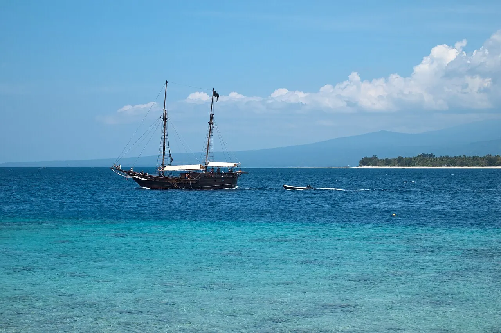

Gili Trawangan
Lombok, Indonésie · snorkeling, plongée, baignade

Petite île sans voiture entourée de récifs et de tortues. Une ambiance détendue et des plongées pour tous.
- Lieu
- Lombok, Indonésie
- Niveau
- Débutant
- Activités
- snorkeling, plongée, baignade
- Type d'eau
- Mer / océan
- Coordonnées
- -8.35, 116.04 (position approximative du secteur)
Dangers à connaître
- Courants entre les îles.
- Tortues : garde tes distances.
Le conseil d'Ocean Buddy
Les sites de snorkeling s’atteignent à la nage depuis la plage. Le courant est annoncé fort entre les îles : demande à un opérateur local où nager. Si tu pars en bateau, regarde si des gilets de sauvetage sont à bord.
Ouvrir dans Ocean Buddy Télécharger sur l'App Store
Source : Fiche Ocean Buddy · septembre 2026 · à vérifier localement.